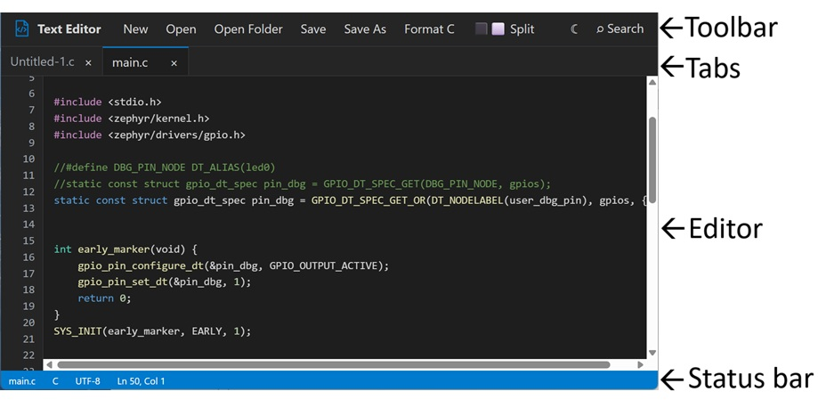
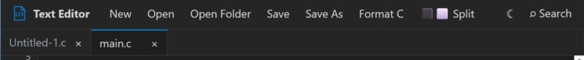

Text Editor — User Guide
Welcome to the official documentation for Text Editor. Here you'll find explanations and step-by-step instructions for getting the most out of each tool.
Use the navigation on the left to jump straight to any chapter.
What the tool is for
A lightweight, browser-based source and text editor with tabs, split view, C/C++ syntax highlighting and formatting, and search & replace. No installation, no build step — it runs entirely as static HTML/CSS/JS.
This tool loads it entirely client-side (nothing uploaded anywhere).
2. Getting started
2.1 Browser support
The web app relies on certain browser functionalities that are not supported by all browsers. Therefore, it can only run on browsers that provide the required features.
The following browsers are supported:
- Google Chrome
- Microsoft Edge
2.2 First launch
The app opens with one empty document, `Untitled-1.c`, ready to type into. New documents default to C so syntax highlighting and auto-indentation are active immediately — you can simply overwrite the extension when you save if you're writing something else.
3. The interface

- Toolbar — file actions, formatting, split view, theme, search.
- Tabs — one per open document; the small ● dot marks unsaved changes.
- Editor — line numbers on the left, syntax-highlighted code on the right.
- Status bar — active file name, detected language, encoding, cursor position.
4. Working with files

| Action | Toolbar button | Shortcut | Behavior |
|---|---|---|---|
| New document | New | Ctrl/Cmd+N | Opens a new, empty `Untitled-N.c` tab |
| Open a file | Open | Ctrl/Cmd+O | Opens a file picker; adds a tab |
| Open a folder | Open Folder | - | Opens every file in a chosen folder, each in its own tab |
| Save | Save | Ctrl/Cmd+S | Saves the active file. If it has no file handle yet, behaves like Save As |
| Save As | Save As | Ctrl/Cmd+Shift+S | Prompts for a new name/location |
| Close tab | tab's × | Ctrl/Cmd+W | Closes the active tab (prompts if unsaved) |
Opening the same file twice: if a file is already open (matched by its path), the app activates the existing tab instead of opening a duplicate — even if that tab is in the other split-view column.
4.1 Unsaved changes
Closing a modified tab opens a dialog with three options:
- Save — writes the file, then closes the tab.
- Close without saving — discards changes and closes the tab.
- Cancel — keeps the tab open.
The browser will also warn you if you try to close or reload the page while any tab has unsaved changes.
4.2 Empty state
Closing the last open tab in a column clears the editor and shows "No file opened." This is normal — use New or Open to start again.
5. Split view
Split view divides the editor into two independent columns, each with its own tabs, its own search panel, and its own editor. Use it to view or edit two files side by side — or the same file twice.
5.1 Turning on / off
- Click Split in the toolbar, or press `Ctrl/Cmd+\`.
- Turning split off folds any files open in the right-hand column back into the left column. Nothing is closed — no changes are lost.
5.2 Which column do actions apply to?
New, Open, Open Folder, Save, Save As, Search, and Format C all act on the focused column — the one you last clicked into. Click anywhere inside a column (its tab bar, its editor) to focus it before using the toolbar or a shortcut.
5.3 Moving a file between columns
Two ways to move a tab from one column to the other:
1. Move button — click the ⇄ icon on the tab (visible whenever split view is active).
2. Drag and drop — drag the tab and drop it onto the other column's tab bar.
Moving a tab activates it in its new column and focuses that column.
5.4 Resizing the columns
Drag the thin vertical divider between the two columns left or right to change their relative widths.
6. Editing
6.1 Basic editing
Type as you would in any text editor. `Tab` inserts four spaces (there is no tab-character indentation).
6.2 C / C++ support
When the active file's extension is one of `.c`, `.h`, `.cpp`, `.hpp`, `.cc` (etc.), the editor adds C/C++-aware behavior:
- Enter
- Completing a block comment (typing the closing `*/`) triggers a lightweight auto-formatting pass.
- Format C (button, or `Ctrl/Cmd+Shift+F`) re-indents the whole file based on brace nesting.
The formatter is intentionally simple and dependency-free — it is not a full compiler-aware tool like `clang-format`. It:
- Normalizes indentation from `{ }` nesting (4 spaces per level).
- Keeps preprocessor lines (`#include`, `#define`, …) at column 0.
- Never touches the contents of strings, comments, or preprocessor lines.
6.3 Syntax highlighting
Highlighting covers C/C++ and several other common formats detected from the file extension: keywords, types, strings, comments, numbers, preprocessor directives, and function calls.
Devicetree (`.dts`, `.dtsi`, `.dtso`) has its own highlighting: `/dts-v1/;` and similar bracket directives, `#include`/`#define` (when pulled in via a `.dtsi`), block and line comments, string and numeric property values, `&label` phandle references, and a broad set of well-known property names (`compatible`, `reg`, `status`, `interrupts`, `clocks`, `gpio-controller`, `#address-cells`, and more).
7. Search & replace
Open the search panel with the Search button or `Ctrl/Cmd+F`. It opens in the focused column and searches only that column's active document.
| Field / control | Purpose |
|---|---|
| Find | The search term |
| Replace | Replacement text |
| Previous / Next | Jump between matches (or press `Enter` / `Shift+Enter` in the Find field) |
| Replace | Replace the current selection if it's a match, then jump to the next |
| Replace All | Replace every match in the document |
| Case sensitive | Match letter case exactly |
| Whole word | Only match whole words |
| Regular expression | Treat the Find term as a JavaScript regular expression |
| Match counter | Shows how many matches exist |
Close the panel with the × button or `Escape`.
8. Appearance
- Toggle dark / light theme with the moon icon (☾) in the toolbar. Your choice is remembered between sessions.
- The status bar always shows the active file's detected language and encoding (UTF-8).
9. Keyboard shortcuts
| Shortcut | Action |
|---|---|
| Ctrl/Cmd+N | New document |
| Ctrl/Cmd+O | Open file |
| Ctrl/Cmd+S | Save |
| Ctrl/Cmd+Shift+S | Save As |
| Ctrl/Cmd+F | Open search |
| Ctrl/Cmd+Shift+F | Format C |
| Ctrl/Cmd+\ | Toggle split view |
| Ctrl/Cmd+W | Close active tab |
| Escape | Close search panel, or dismiss the unsaved-changes dialog |
| Tab (in editor) | Insert four spaces |
10. Tips
- Comparing two files: turn on split view, open one file in each column, and drag the divider to size them evenly.
- The same file, twice: opening a file that's already open elsewhere switches you to that existing tab rather than creating a second copy — even across columns. There's currently no way to view the same file in both columns at once.
- Losing your place: the app warns before you close or reload the browser tab if anything is unsaved — but it's still good practice to save often, especially before using Open Folder on a large directory.
- Format C only affects `.c`/`.cpp`-recognized files; running it on other file types does nothing.
11. Limitations
- The C/C++ formatter is indentation-only; it does not reflow long lines, align pointers, or apply a style guide.
- Regular-expression search uses standard JavaScript regex syntax.
- On browsers without the File System Access API, "Save" always downloads a new file rather than overwriting the original on disk.
5. FAQ & Help
Q: What should I do if a tool won't load?
A: First try clearing your browser cache and reloading the page.